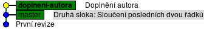
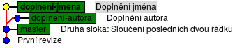

PyLadies Brno
Větvení v Gitu
Takže, Git už znáš! Teď to začne být trošičku
složitější :)
Programátorky občas potřebují pracovat na dvou věcích zároveň. V projektu do práce se objeví se chyba, která musí být spravená ještě dnes, tak programátorka opustí co zrovna dělá, vrátí se k nějaké „stabilní” verzi, opraví chybu, a odešle ji zákazníkům. A pak se vrátí k tomu, co dělala předtím – jen ještě musí zakomponovat opravu chyby i do verze, na které pracuje dlouhodobě.
Git na to má takzvané větve (angl. branches). Na jedné „větvi” se pracuje, ale dá se přepnout do jiné (třeba starší) větve, udělat pár změn, a pak se zase přepnout do nové větve a pokračovat dál, nebo sloučit změny.
Větvení využijeme i při spolupráci více lidí – každý dělá na vlastní větvi, a když přijde čas, tak se různé změny sloučí dohromady.
Programátorky občas potřebují pracovat na dvou věcích zároveň. V projektu do práce se objeví se chyba, která musí být spravená ještě dnes, tak programátorka opustí co zrovna dělá, vrátí se k nějaké „stabilní” verzi, opraví chybu, a odešle ji zákazníkům. A pak se vrátí k tomu, co dělala předtím – jen ještě musí zakomponovat opravu chyby i do verze, na které pracuje dlouhodobě.
Git na to má takzvané větve (angl. branches). Na jedné „větvi” se pracuje, ale dá se přepnout do jiné (třeba starší) větve, udělat pár změn, a pak se zase přepnout do nové větve a pokračovat dál, nebo sloučit změny.
Větvení využijeme i při spolupráci více lidí – každý dělá na vlastní větvi, a když přijde čas, tak se různé změny sloučí dohromady.
Podívej se, jaké máš větve ve svém repozitáři.
K tomu slouží příkaz
git branch.
$ git branch
* master
Je tam jenom jedna, a jmenuje se master
– to je tradičně jméno „hlavní” větve.
K vytvoření nové větve znovu použiješ
git branch, jen tomu příkazu dáš navíc
jméno nové větve.
Třeba budeš chtít k básničce doplnit jméno autora,
tak větev pojmenuješ doplneni-autora.
$ git branch doplneni-autora
$ git branch
* master
doplneni-autora
Tenhle příkaz sice udělal novou větev,
ale nepřepnul do ní.
Hvězdička ve výstupu z git branch ukazuje,
že stále pracuješ v master.
Na přepnutí budeš potřebovat další příkaz:
$ git checkout doplneni-autora
$ git branch
master
* doplneni-autora
Tak. Teď jsme „ve” větvi doplneni-autora.
Doplň jméno do souboru basnicka.txt,
a pomocí git add a git commit
udělej novou revizi.
Pak koukni na gitk --all, jak to vypadá:

Aktuální větev – doplneni-autora – je
zvýrazněná tučně, a starší master je stále
na původní revizi.
Opusťme teď na chvíli práci na doplňování autora.
Vrať se do větve
Takhle nějak se dá postupovat v situaci popsané v úvodu: opuštění rozpracované verze, přechod na „stabilní” verzi
Mezi jednotlivými větvemi se dá podle libosti přepínat, jen je vždycky dobré před přepnutím udělat novou revizi (
Na stejném priincipu funguje i spolupráce několika lidí na jednom projektu: je nějaký společný základ (
A až je některá větev hotová, může se začlenit zpátky do
master, a vytvoř z ní
větev doplneni-jmena.
Pak se na tuhle novou větev přepni.
$ git checkout master
$ git branch doplneni-jmena
$ git checkout doplneni-jmena
$ git branch
master
doplneni-autora
* doplneni-jmena
Doplň do souboru jméno básně, a pomocí
git add, git commit
ulož revizi.
Všechno zkontroluj přes gitk --all.

Takhle nějak se dá postupovat v situaci popsané v úvodu: opuštění rozpracované verze, přechod na „stabilní” verzi
master, a začátek práce v jiné
části projektu.
Mezi jednotlivými větvemi se dá podle libosti přepínat, jen je vždycky dobré před přepnutím udělat novou revizi (
git commit), a pomocí
git status zkontrolovat, jestli je všechno
uložené v Gitu.
Na stejném priincipu funguje i spolupráce několika lidí na jednom projektu: je nějaký společný základ (
master), a každý dělá na vlastní větvi,
dokud není se svými změnami spokojený.
A až je některá větev hotová, může se začlenit zpátky do
master. Podívejme se jak na to.
Sloučení
Nedávalo by smysl historii projektu rozdvojovat,
kdyby pak jednotlivé větve nešly zase sloučit dohromady.
Naštěstí je v Gitu slučování poměrně jednoduché.
Přepni se zpátky na
A pak zkus sloučit i druhou větev:
Ať nastal konflikt nebo ne, vytvoří se slučovací revize” (angl. merge commit), které můžeš dát popisek. Pokud ano, můžeš staré větve vymazat – všechny jejich
změny jsou v
Pokud ano, můžeš staré větve vymazat – všechny jejich
změny jsou v
Přepni se zpátky na
master,
a použij příkaz git merge, který
sloučí jinou větev s tou aktuální.
Příkazu musíš dát jméno větve, kterou chceš sloučit.
$ git checkout master
$ git merge doplneni-jmena
Updating c33e43e..561d3ab
Fast-forward
basnicka.txt | 3 +++
1 file changed, 3 insertions(+)
Sloučeno! Ono „Fast-forward” znamená, že
vlastně nebylo co slučovat – jen se do větve
master přidaly nové změny.
Zkontroluj v gitk --all, jak to vypadá.
A pak zkus sloučit i druhou větev:
git merge doplneni-autora.
Tady to bude složitější: Může se stát, že změny nepůjdou
automaticky sloučit, a ve výstupu se objeví hláška
merge conflict (slučovací konflikt).
V tom případě se na soubor podívej v editoru: objeví
se v něm obsah z obou konfliktních verzí,
společně se značkami, které upozorňují na místo
kde konflikt nastal.
Soubor uprav ho tak, jak by měl vypadat, ulož, a zadej
git commit
Ať nastal konflikt nebo ne, vytvoří se slučovací revize” (angl. merge commit), které můžeš dát popisek.
$ git merge doplneni-autora
Auto-merging basnicka.txt
Merge made by the 'recursive' strategy.
basnicka.txt | 1 +
1 file changed, 1 insertion(+)
Povedlo se?
master, a nemá na nich cenu
pracovat dál.
$ git branch -d doplneni-autora
Deleted branch doplneni-autora (was 230ace8).
$ git branch -d doplneni-jmena
Deleted branch doplneni-jmena (was 561d3ab).
$ git branch
* master
Závěr
Bylo toho moc?
To nevadí; větve zatím používat nemusíš.
Ale je dobré do budoucna vědět, co ten Git vlastně umí.